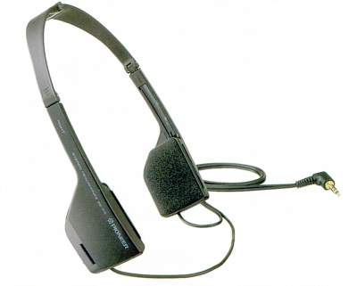
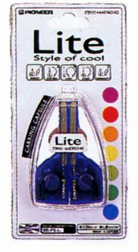
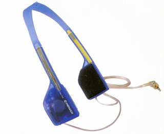
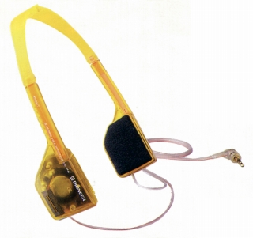
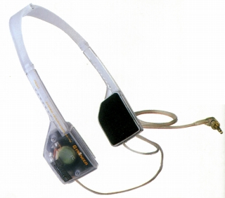
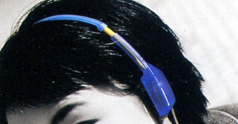
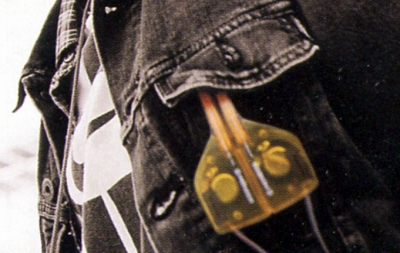
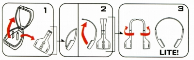
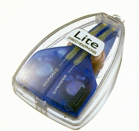

SE-F5


■価格 2,500円
■型式 ダイナミック型オープンエアタイプ
■振動板
27�o
■インピーダンス 32Ω
■再生周波数帯域 20-20,000Hz
■許容入力 100mW
■感度 97ｄB/mW
■コード 2ｍOFC L型ミニプラグ
■重量 35g（コード含まず）
■発売 1998年2月
■販売終了
■備考 ノーマルなブラック仕上げの他、スケルトンモデルあり



（左から スケルトン・ブルーのSE-F-L、イエローのSE-F5-Y、ホワイトのSE-F5-W 価格はノーマルタイプと同じ）


2アクション・折り畳み方式を採用、専用キャリングカプセル付き


「Lite」シリーズとされているが、AVモデルのSE-5AV、3AV以外のシリーズモデルの有無は不明。
なおSE-5AV、3AVはドライバーはSE-F5と同じだが、ヘッドバンドの構造が違う。